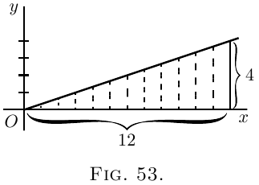

令 $AB$（图 52）为一条曲线，其方程是已知的。 也就是说，此曲线中的 $y$ 是 $x$ 的某个已知函数。 考虑曲线从点 $P$ 到点 $Q$ 的一部分。
从 $P$ 画一条垂线 $PM$，从点 $Q$ 画另一条垂线 $QN$。 然后将 $OM$ 称为 $x_1$，$ON$ 称为 $x_2$，纵坐标 $PM = y_1$，$QN = y_2$。 我们由此标记出位于 $PQ$ 部分下方的区域 $PQNM$。 问题是，我们如何计算此区域的值？
解决此问题的秘诀是将该区域视为被划分为许多窄条，每个窄条的宽度为 $dx$。 我们取的 $dx$ 越小，在 $x_1$ 和 $x_2$ 之间就会有越多条。 现在，整个面积显然等于所有此类条带的面积之和。 那么，我们的工作将是发现任何一个窄条的面积的表达式，并对其进行积分以将所有条带相加。 现在考虑任何一个条带。 它将像这样：
它的边界是两个垂直边，底部是平的 $dx$，顶部略微弯曲倾斜。
假设我们取其平均高度为 $y$；那么，由于其宽度为 $dx$，其面积将为 $y\, dx$。 并且看到我们可以根据自己的意愿使宽度变窄，如果我们使宽度足够窄，则其平均高度将与其中间高度相同。 现在，让我们将整个区域的未知值称为 $S$，表示表面。 一个条的面积将只是整个面积的一部分，因此可以称为 $dS$。 因此，我们可以写成
\[
\text{1 个条的面积} = dS = y · dx.
\]
那么，如果我们把所有条相加，我们就得到
\[
\text{总面积 $S$} = \int dS = \int y\, dx.
\]
因此，我们求出 $S$ 的关键在于，当我们知道 $y$ 的值是 $x$ 的函数时，我们是否可以对 $y · dx$ 进行积分。
例如，如果你被告知对于所讨论的特定曲线 $y = b + ax^2$，毫无疑问，你可以将该值代入表达式并说：那么我必须求出 $\int (b + ax^2)\, dx$。
这一切都很好；但是，稍微思考一下就会发现，必须做更多的事情。 因为我们试图找到的面积不是整条曲线下方的面积，而只是左侧以 $PM$ 为界，右侧以 $QN$ 为界的面积，因此我们必须做一些事情来定义这些“极限”之间的面积。
这将我们引入一个新的概念，即在极限之间积分的概念。 我们假设 $x$ 变化，并且出于当前目的，我们不需要低于 $x_1$（即 $OM$）的任何 $x$ 值，也不需要高于 $x_2$（即 $ON$）的任何 $x$ 值。 当要在两个极限之间这样定义一个积分时，我们称两个值中较低的值为下限，较高值为上限。 如此限定的任何积分，我们都将其指定为定积分，以区别于未指定任何极限的不定积分。
在给出积分指令的符号中，极限是通过将它们分别放在积分符号的顶部和底部来标记的。 因此，指令
\[
\int_{x=x_1}^{x=x_2} y · dx
\]
将解读为：求 $y · dx$ 在下限 $x_1$ 和上限 $x_2$ 之间的积分。
有时，事情写得更简单
\[
\int^{x_2}_{x_1} y · dx.
\]
那么，当你得到这些指令时，如何求出极限之间的积分？
再次查看图 52。 假设我们可以找到曲线从 $A$ 到 $Q$ 的较大部分的面积，即从 $x = 0$ 到 $x = x_2$，将面积命名为 $AQNO$。 然后，假设我们可以找到从 $A$ 到 $P$ 的较小部分的面积，即从 $x = 0$ 到 $x = x_1$，即面积 $APMO$。 那么，如果我们从较大的面积中减去较小的面积，我们将剩下我们想要的面积 $PQNM$。 在这里，我们有关于要做什么的线索；两个极限之间的定积分是为上限计算出的积分与为下限计算出的积分之间的差。
那么，让我们开始吧。 首先，找到通用积分如下：
\[
\int y\, dx,
\]
并且，由于 $y = b + ax^2$ 是曲线的方程（图 52），
\[
\int (b + ax^2)\, dx
\]
是我们必须找到的通用积分。
通过规则完成所讨论的积分，我们得到
\[
bx + \frac{a}{3} x^3 + C;
\]
这将是从 $0$ 到我们可能指定的任何 $x$ 值的所有面积。
因此，达到上限 $x_2$ 的较大面积为
\[
bx_2 + \frac{a}{3} x_2^3 + C;
\]
并且达到下限 $x_1$ 的较小面积为
\[
bx_1 + \frac{a}{3} x_1^3 + C.
\]
现在，从较大的面积中减去较小的面积，我们得到面积 $S$ 的值为
\[
\text{面积 $S$} = b(x_2 - x_1) + \frac{a}{3}(x_2^3 - x_1^3).
\]
这就是我们想要的答案。 让我们给出一些数值。 假设 $b = 10$，$a = 0.06$，$x_2 = 8$ 且 $x_1 = 6$。 则面积 $S$ 等于
\begin{gather*}
10(8 - 6) + \frac{0.06}{3} (8^3 - 6^3) \\
\begin{aligned}
&= 20 + 0.02(512 - 216) \\
&= 20 + 0.02 × 296 \\
&= 20 + 5.92 \\
&= 25.92.
\end{aligned}
\end{gather*}
让我们在这里给出一个符号化的方式来陈述我们所确定的关于极限的内容：
\[
\int^{x=x_2}_{x=x_1} y\, dx = y_2 - y_1,
\]
其中 $y_2$ 是对应于 $x_2$ 的 $y\, dx$ 的积分值，$y_1$ 是对应于 $x_1$ 的积分值。
所有极限之间的积分都需要这样找到两个值之间的差。 还要注意，在进行减法运算时，添加的常数 $C$ 已经消失了。
示例
(1) 为了使自己熟悉这个过程，让我们以一个我们事先知道答案的例子为例。 让我们找到三角形（图 53）的面积，其底为 $x = 12$，高为 $y = 4$。 我们事先从明显的测量中知道答案将为 24。
 现在，我们在这里的“曲线”是一条斜线，其方程为
\[
y = \frac{x}{3}.
\]
所讨论的面积将是
\[
\int^{x=12}_{x=0} y · dx = \int^{x=12}_{x=0} \frac{x}{3} · dx.
\]
对 $\dfrac{x}{3}\, dx$ 进行积分（此处），并在方括号中写下通用积分的值，并在上方和下方标记极限，我们得到
\begin{align*}
\text{面积}\;
&= \left[ \frac{1}{3} · \frac{1}{2} x^2 \right]^{x=12}_{x=0} + C \\
&= \left[ \frac{x^2}{6} \right]^{x=12}_{x=0} + C \\
&= \left[ \frac{12^2}{6} \right] - \left[ \frac{0^2}{6} \right] \\
&= \frac{144}{6} = 24.\quad \text{答}。
\end{align*}
让我们通过在一个简单的例子中测试来使自己对这种相当令人惊讶的计算技巧感到满意。 获得一些方格纸，最好是一些按八分之一英寸或十分之一英寸的小方格划分的方格纸。 在此方格纸上绘制方程的图形，
\[
y = \frac{x}{3}.
\]
要绘制的值为：